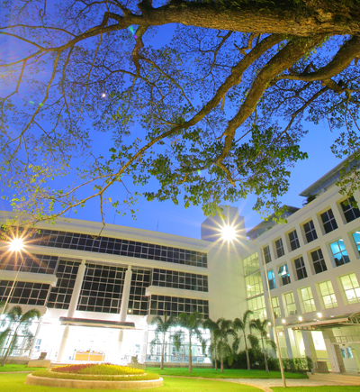

Home
CAMT Information

Chiang Mai University (CMU), a main government university in northern Thailand,
has 25,394 students and 1,714 academic staff (2004). The Thai government has
proposed CMU to be the aviation hub for Greater Mekong Sub-region (GMS) nations
including Laos, Burma, China, Cambodia and Vietnam, and has recently declared
Chiang Mai as one of three ICT (Information and Communication Technology)
Cities. The government activities cover the development of e-tourism, e-business
for handicraft industry, e-commerce, e-government, e-learning, alternative
media, game, animation, mobile, e-business for SMEs and larger organizations.
The city provides modern infrastructure for international business investment,
because its economy mainly depends on tourism handicraft and software
businesses. CMU has just established a new college called College of Arts, Media
and Technology (CAMT). CAMT focuses on human resource development and innovation
in ICT for tourism, handicraft and software industries in Northern Thailand.
CAMT is aiming at offering undergraduate programs in software engineering,
animation, e-tourism and handicraft design. At a post-graduate level, CAMT
grants degrees for both Master’s and Doctoral studies for experienced knowledge
workers. Research groups are set up in the college to support industrial
research.